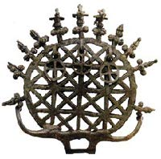

Tarihte en fazla savaş arabasının kullanıldığı ve ilk yazılı anlaşmayla sonuçlanan Kadeş savaşı, dönemin iki güçlü devleti Mısırlılar ile Hititler arasında yapıldı. M.Ö. 1274 yılında yapılan ve büyük Ramses dönemine denk gelen savaşın çıkış nedeni bugünkü Suriye sınırları içinde kalan Amurru ve Amka toprakları gibi büyük ticaret yollarını ele geçirmekti. Zira bu topraklar, Ortadoğu’dan geçen doğu batı ticaret yollarının kilit noktasını oluşturuyor ve Kuzeyin büyük devleti Hititler ve güneyin büyük devleti Mısır arasında rekabete neden oluyordu. Bu ticaret yollarının ele geçirilmesi demek, bir bakıma Ortadoğu’nun hâkimiyetinin ele geçirilmesi demekti.
Suriye, ilkçağ tarihinde askerlik ve ticaret bakımından çok önemli bir ülkeydi. Hitit Kralı Muvattalis (ya da Mutavalli, Mutavalliş), kral Şuppiluliuma’nın bölge siyasetini devam ettirerek Suriye’den vazgeçmedi. Mısır’ın efsanevi firavunu II. Ramses ise her ne pahasına olursa olsun Suriye’ye hâkim olmak istiyordu. Bölgenin bu iki güçlü ülkesi arasıdaki egemenlik mücadelesi, savaşın başlamasına sebep oldu. Savaşın görünürdeki nedeni, II. Ramses’in tahta geçişinin beşinci yılında tek tanrılı Mısır dininin kurucusu Akhenaton’un dul eşi Nefertiti’yle evlenmesi için gönderdiği bir Hitit prensinin, yolda tuzağa düşürülüp öldürülmesiydi. Bu olay üzerine Hitit Kralı Mutavallis, Mısır’a savaş açtı. Ancak asıl neden, M.Ö. 13. yüzyıl başlarında Mısır ve Hitit devletlerinin birbirine eşit kuvvetler haline gelmesi ve bu iki büyük devletin ekonomik çıkarlarının Kuzey Suriye toprakları üzerinde çatışmasıydı.
Kadeş Savaşı’nda, tarafların askeri güçleri ve silah teknikleri bakımından kıyaslanmasında birbirinden farklı görüşler ileri sürülmektedir. Bu konuda ileri sürülen tezler tapınaklarda yer alan yazı ve resimlerin yorumuna dayanmaktadır. Fakat yine de savaşın taraflarının güçlerinin kestirilmesinde önemli bulgular bugüne kadar ulaşmıştır. Bu bulgulardan biri Hitit başkenti Hattuşa’daki kazılar sırasında bulunan ve yaklaşık bin satır uzunluğundaki bir metinden oluşan tablettir. Hitit diliyle yazılmış olan tablette, Hititlerin at yetiştiriciliği ve binicilik kuralları anlatılmaktadır. Bu tablette anlatılan bilgiler değerlendirildiğinde, Hititlerin at yetiştiriciliği ve binicilik konusunda ne derece ileri bir düzeye eriştikleri görülmektedir.
Hititlerin üstün savaş gücünü gösteren bir diğer belge ise savaş arabalarıdır. Hitit savaş arabası o dönemde yaygın olarak kullanılan dört tekerlekli savaş arabalarının aksine altı tekerleklidir. Üstelik bu savaş arabalarının tekerlekleri diğer devletlerin kullandığı savaş arabalarının tekerlekleri gibi yekpare tahtadan yapılmış değil, daha gelişmiş bir teknikle imal edilen, bugünkü tekerleklere benzeyen çubuklarla desteklenmiş tekerleklerdir. Bu tekerlekler sayesinde Hititlerin savaş arabaları, çok daha hafif ve hareket kabiliyeti yüksek arabalardı. Bu arabaların diğerlerine göre hafif olması, bir savaş arabasına iki yerine üç askerin binmesine olanak tanıyordu. Bu askerlerden birisi arabayı sürüyor, ikincisi arabadaki öteki iki kişiyi koruyacak biçimde kalkan kullanıyor, üçüncüsü ise ok ve mızrak fırlatıyordu.
Kadeş savaşında Ramses ve Mutavallis ordularının sayıları hakkında çeşitli görüşler ileri sürülmektedir. Örneğin Mısırlıların, savaşta gösterdikleri
fedakarlık ve kahramanlıkları abartmak için Hitit ordusunun sayısını özellikle abarttıkları bir vakadır. Bugünün verileri ile kabul edilen genel görüşe göre Mutavallis ordusunun bu savaşa on yedi bin piyade ve dört bin beş yüz savaş arabasıyla vardır. Her savaş arabasında 3 asker olduğuna düşünüldüğünde toplam on üç bin beş yüz arabalı askerin savaşa katıldığı düşünülebilir. Şu durumda Hititlerin toplam savaşçı sayısı otuz bin civarında bulunmaktadır. Buna karşılık II. Ramses’in ordusunun toplam sayısının, yirmi bin dolaylarında olduğu tahmin edilmektedir. Bu veriler değerlendirildiğinde Hitit ordusu hem savaş arabalarının üstünlüğü hem de asker sayısı bakımından II. Ramses’in ordusundan daha güçlüdür. Bu teknik ve sayısal üstünlük savaş sırasında da kendini göstermiş, Mutavallis’in orduları II. Ramses’in ordularına ağır kayıplar verdirerek sıkıntılı anlar yaşatmışlardır.
Mısır ve Hitit Devleti Arasındaki Gerilim
Kadeş savaşı Suriye ticaret yollarının denetimi yüzünden çıksa da savaşa kadar uzanan sürecin bir arka planı vardır. Şöyle ki; tek tanrıya inandığı için ‘sapkın firavun’ diye adlandırılan firavun Akhenaton’un ölümünden sonra yerine büyük oğlu Smenkare geçmiştir. Smenkare’nin ölümle sonuçlanan kısa süren firavunluğu sonrasında Mısır tahtına Tutankamon geçti. Tutankamon tahta oturduğunda henüz çocuk denebilecek bir yaştaydı ve üvey kız kardeşi Ankesenamon ile evlendirilmişti. Tutankamon on sekiz yaşında iken, -sonradan mumyası üzerinde yapılan röntgen incelemelerinin de gösterdiği gibi- kafatasına aldığı bir darbeyle öldürüldü. Bu cinayet başrahip Eje tarafından işlenmiştir. Tutankamon’un ölümünden sonra kraliyet tahtına oturmak isteyen başrahip Eje, bunun en kolay ve kestirme yolunun dul kalan kraliçe Ankesenamon ile evlenmek olduğunu düşünüyordu. Ne var ki, kraliçe Ankesenamon, başrahip Eje ile evlenmek istemedi. Bunun nedeni Kraliçenin, Tutankamon’un başrahip tarafından öldürüldüğünü biliyor olması olabileceği gibi Eje’nin yaşlılığı da olabilir. Bu konuda tarih kaynaklarında yeterli bilgi bulunmamaktadır. Ankesenamon başrahip Eje’yle evlenmemek için ününü duyduğu Hitit kralı Suppiluliuma’dan yardım ister. Suppiluliuma’nın oğlu II. Murşiliş’in yazdığı mektuba göre şöyle yardım istemiştir:
“Mısırlılar, Amka zaferini duyunca korktular. Üstelik firavunları da ölmüş olduğu için, Mısır’ın dul kraliçesi, babama bir elçi ile şu mektubu yolladı: Kocam öldü. Benim oğlum yok. Duyduğuma göre sende oğul çokmuş. Eğer bana oğullarından birisini verirsen onu koca yapacağım. Tebaamdan birisini kocam yapmayı asla istemiyorum. Ona koca olarak saygı duyamam.”
Bu mektup üzerine Suppiluliuma, Hatti büyüklerini toplayarak bir karara varır ve danışmanı Hattuşa-ziti’yi Mısır’a elçi olarak gönderip yaşananları etraflıca öğrenmesi ve kendisine bilgi getirmesi için görevlendirir. Hattuşa-ziti, Mısır’da konu hakkında araştırma yaparken, Suppiluliuma Karkamış’ı ele geçirir ve burada büyük bir savaş ganimeti ele geçirir. Bu başarı, Suppiluliuma’nın bölgedeki şöhretini iyice artırmıştır. Bir müddet sonra Mısır’daki araştırmalarını tamamlayan Hattuşa-ziti, Ankesenamon’dan bir mektup getirir. Bu mektupta Suppiluliuma’ya hitaben şunlar yazılıdır:
“Niçin bana inanmıyorsun? Niçin alay edildiğini sanıyorsun? Ben başkasına değil yalnızca sana yazdım. Birçok oğlun olduğu söyleniyor. Oğullarından birini bana verirsen o, hem bana koca hem de Mısır’a kral olacak.”
Bunun üzerine Suppiluliuma, Ankesenamon’un isteğini yerine getirerek oğullardan birini ona eş olarak seçer. Hem böylelikle, Mısır’daki firavunluk soyu da Hititlere geçecektir. Nihayet Hitit kralı Suppiluliuma oğlu Zannanza’yı küçük bir askeri birlik refakatinde Mısır’a gönderir. Ne var ki, bir süre sonra Hitit ülkesine, prens Zannanza’nın sınırı geçtikten sonra öldürüldüğü haberi gelir. Zira firavunluk tahtına oturmaya kesin gözüyle bakan başrahip Eje, Ankesenamon’un Hitit kralından yardım istediğini öğrenmiş ve başkomutan Horemheb’in komuta ettiği bir orduyu Hitit Prensi Zannanza’nın birliğinin üzerine göndererek hem prensi hem de Hitit askerlerinin tamamını yok ettirmiştir. Hitti tabletlerinden anlaşıldığına göre kral Suppiluliuma, oğlunun ölümüne çok üzülmüş, günlerce gözyaşı dökerek intikam yeminleri etmiş ve bu maksatla başta fırtına tanrısı Teşup olmak üzere bütün tanrılara kurbanlar adamıştır.
Kral Suppiluliuma, oğlu Zannanza’nın intikamını almak için yanıp tutuşmaktadır. Ne var ki, o sırada Anadolu’da yayılmaya başlayan veba salgını, kralın Mısır’ın üzerine yürümesini engeller. Zira kral Suppiluliuma da, bu salgında vebaya yakalanarak M.Ö. 1335 yılında ölmüştür. Suppiluliuma’nın ardından tahta geçen oğlu III. Arnuvandas da sadece bir yıl krallık yapmış o da tıpkı babası gibi vebadan ölünce yerine II. Murşiliş geçmiştir. II. Murşiliş tahta geçer geçmez, Hitit imparatorluğunda sık sık taht değişimini yönetim zafiyeti olarak değerlendirip bunu fırsata dönüştürerek ayaklanan Arzavalılar’ın üzerine yürür. İki yıl süren bu savaşın sonunda Arzava ülkesini yakıp yıkar. Ardından ülkenin kuzeyinde isyan eden Kaşka’lıları ve diğer kavimleri bastırır. II. Murşiliş’ten M.Ö. 1306 yılında öldüğünde arkasında istikrarını sağlamış, güçlü bir devlet bırakmıştır. Onun ölümünden sonra yerine oğlu Muvatallis geçmiştir.
Aynı dönem Mısır’da Akhenaton’la birlikte ortaya çıkan karışıklık ve yönetim zaaifyetinin ortadan kalktığı, II. Ramses’in güçlü bir firavun kral olarak tahta oturduğu dönemdir. II. Ramses, daha imparatorluğunun ilk yıllarında ülkede düzeni tesis etmek ve Mısır’ın gücünü tüm Ortadoğu bölgesine kabul ettirebilmek için komşu ülkeler üzerine seferler düzenlemeye başladı. Bu seferler neticesinde, Suriye topraklarında Hititlere bağlı olarak yaşayan Amurrular, II. Ramses’e bağlılıklarını açıkladılar. Amurru prensi Benteşina, kendisine bir takım vaatler ve tavizlerde bulunan II. Ramses’in egemenliğin kabul ederek Hititlerden koptu. Bu durum zaten öteden beri Mısır’a saldırmak isteyen Hititler için bardağı taşıran son damla oldu. Hittiler II. Ramses’in yükselişini durdurmamaları halinde bölge üstünlüğünü tamamen Mısırlılara kaptırabilirdi. O dönem II. Ramses’i durdurabilecek tek güçlü devlet ise Hititlerdi. Böylelikle Hitit kralı Muvatallis hem Mısırlılara kaptırdığı Amurru’yu yeniden ülkesine bağlamak hem de Prens Zannanza’nın intikamını alma için Mısır ordusu üzerine sefere çıktı. Böylelikle iki ordu M.Ö. 1285 yılında Halep ile Şam’ın ortasında bulunan olan Kadeş’te karşı karşıya geldiler.
Kadeş Savaşı’nın Başlaması
Hitit ordusu üç bin savaş aracı ile on yedi bin zırhlı asker, Mısır ordusu ise her birine Amon, Ra, Ptah, Seth tanrı isimlerinin verildiği dört bölükten oluşan yirmi bin asker ve iki bin savaş arabası ile savaşa girdiler. Mısır kralı II. Ramses, savaştan en ön saflarda yer alan ve en büyük tümen olan Amon tümenini komuta ediyordu. Mısır ordusunun savaş birliklerinin her birine tanrı isimlerini vermesi, savaşa kutsal bir içerik kazandırma ve tanrılar adına yapılan savaşta askerlerini motive etme amacını taşıyordu.
Savaş sırasında Hitit casusları, II. Ramses’i yanıltmak için henüz Mısır ordusu Asi nehrini geçmeden Hititlilerin Halep yakınlarında olduğu haberini yaydılar. Bu yanıltıcı istihbarat taktiği üzerine, II. Ramses tümeni Amon, diğer Mısır birlikleriyle arayı açarak ordunun kalanıyla arayı açtı. Mısır birliklerinin ayrılmasını fırsat bilen Hitit kralı Muvatallis, Mısır ordusuna ani bir baskın düzenledi. Savaş arabalarının hafifliğini ve manevra üstünlüğünü iyi kullanan Hititliler, kısa sürede Amon tümenini kuşatmaya aldılar. Bu sırada II. Ramses, Amon tümeninin tam ortasında bulunuyordu. Ramses ve Amon tümeni etkili Hitit kuşatması altında, yok olma tehlikesi ile karşı karşıya kaldı. Amon tümenin ve II. Ramses’in yok edilmesi halinde Mısır ordusu başsız kalacak, böylelikle kalan Ra, Ptah ve Seth tümenlerinin imha edilmesi kolaylaşacaktı. Böylece savaş Hititlilerin mutlak üstünlüğü ile sonuçlanarak ordunun Mısır toprakları üzerine yürümesinin önünde hiçbir engel kalmayacaktı.
Bu ilk karşılaşmada Hitit kralı Muvatallis’in, kardeşi III. Hattuşiliş ve oğlu Urhi Teşup ile birlikte kumanda ettiği Hitit birlikleri, Ramses’in ordularına büyük zaiyat verdirdiler. Bu baskında II. Ramses bile canını zor kurtararak, Amon tümeninin içine zor ulaştı. Hitit birlikleriyle savaşa tutuşan Ra tümeninden ise geriye çok az asker kaldı. Ra tümeninde geriye kalan askerler düzensiz olarak savaş meydanından kaçmaya başladılar. Hititlilerin bu ilk galibiyeti Mısır kitabelerinde şöyle dile gelmektedir: “Yürüyüş kolundaki Ra tümeninin ortasına saldırdılar. Ra tümeni, harekat halindeydi. Savaşa hazır değildi. Bu nedenle majestelerinin (II. Ramses) askerleri de savaş arabaları da onlar (Hititler) karşısında yenildi.”
Hitit ordusu bütün gücüne ve manevra üstünlüğüne rağmen pek çok ulustan derlenmiş bir ordu idi ve disiplin yönünden zayıftı. Bu yüzden de zafer sarhoşluğuna kapılarak Mısır ordugâhına girer girmez yağmalamaya başladılar. Yağma sırasında Hitit ordusunun disiplini iyice zafiyete uğramış, emir komuta hiyerarşisi bir anda yok olmuştu. Mısır ordugâhı ganimet yönünden çok zengindi. Hitti ordusunun bu disiplinsizliğini ve zafer sarhoşluğunu fırsat bilen II. Ramses, Hitit ordusuna karşı taarruza geçerek savaşta dengeyi yeniden kurdu. Mısır kitabelerinde bu karşı saldırı sırasında kral II. Ramses’in kahramanlıkları üzerine abartılı öyküler ve yazılar yer almaktadır. Christian Jacq’ın aynı kaynaklardan yola çıkarak kaleme aldığı Ramses serisinin Kadeş bölümünde Ramses’in kahramanlıkları ve elde ettiği zaferin öyküsünü görkemli bir dille anlatılmaktadır.
Ancak Hitit kaynaklarında olay daha farklı ifade edilmektedir. Bu kaynaklara göre Mısır ordugâhının yağmalamaya başlayan disiplinsiz askerler hiç beklenmeyen anda, küçük bir düzenli birliğin saldırısına uğramış ve toparlanmaya fırsat bulamadan dağılmışlardır. Ancak bu birliğin II. Ramses birlikleri olmadığı konusunda kuvvetli bir inanış vardır. Zira II. Ramses’in şu sözleri bu kanıyı güçlendirmektedir: “Yanımda ne bir prens var, ne bir sürücü, ne bir piyade subayı, ne de bir araba savaşçısı. Yaya askerim de araba savaşçılarım da beni onların karşısında ganimet gibi bırakarak çekip gitti. Onlarla savaşmak için kimse beklemedi.”
Bundan sonra savaş bir müddet daha sürmüş ancak her iki ordu da birbirlerine karşı bariz bir üstünlük sağlayamamıştır. Mısır yazıtlarında Muvatallis’in Ramses’e şöyle bir mektup yolladığı ileri sürülmektedir: “...Mısır ve Hatti ülkeleri senin emrindedir ve ayaklarının altına serilmiştir...”
Ancak mektupta geçtiği ileri sürülen bu beyanın doğruluğu zayıf ihtimaldir. Zira o sırada Hitit kralı Muvatallis başkent Hattuşa’dan yaklaşık altı yüz kilometre uzakta, Suriye topraklarında bulunmaktadır. Daha iki ordu arasındaki ilk çatışmada Mısır orduları ağır zayiat vererek geriye çekilmek zorunda kalmıştır. Dolayısıyla Muvatallis’in, üstün olduğu bir anda II. Ramses’e böylesi bir mektup yazması mantık dışıdır. Bugün, tarihçiler ve çoğu araştırmacı böylesi bir mektubun olmadığı konusunda hemfikirdir. II. Ramses’in, aslında yenik düştü bir savaşta kendini galip gibi gösterip, halkının birliğini sağlamak ve içerde gelişecek başkaldırıları engelleyerek siyasal birliğin korumak amacıyla böylesi bir mektubun varlığını ifşa etmiş olması akla daha yatkındır.

Hitit İmparatorluğunun simgesi Hitit güneşi.
Mısır tapınakları, mezarları ve saraylarında II. Ramses’in Kadeş Savaşı’nı kazandığına dair resim ve yazılara rastlansa da savaşın galibinin Hititliler olduğunu gösteren çok sayıda kanıt bulunmaktadır. Bunun en somut göstergesi Prens Benteşina’nın Mısır’a bağladığı Amurru ülkesinin, savaştan hemen sonra yeniden Hititlilere bağlanmasıdır. Zira savaşın asıl çıkış kaynağı Amurru ülkesi üzerindeki hakimiyet mücadelesidir ve savaşın sonunda bu hakimiyet Hititlilerin eline geçmiştir.
Öte yandan savaşın ardından M.Ö. 1280 tarihinde, Hitit kralı III. Hattuşiliş ile II. Ramses arasında imzalanan Kadeş barış antlaşmasından sonra Hitit kralı büyük bir tören düzenleyerek, büyük kızını Ramses’e eş olarak vermiştir. II. Ramses, daha sonra Maatnefrure adını alan bu kızı Baş kraliçe ilan etmiştir. Bu durum Hititlerin Mısır üzerinde büyük bir nüfuz kurduğunun göstergesidir ki, böylesi bir kabul ancak Hititlerin savaştan galip çıkması ile mümkündür.
Tarihçiler Hitit kaynakları ve diğer kaynaklar bulununcaya kadar Kadeş savaşının kesin galibinin Mısırlılar olduğu konusunda mutabıktılar. Buna rağmen böylesi bir zaferin ardından nasıl olup da Hititlerin Amurru prensliğin üzerinde yeniden hâkimiyet kurduğu ve hal böyle iken Hititlilerin Mısır’a haraç vermeyi kabul ettiği bir türlü izah edilemiyordu. Ne var ki, Hitit kaynaklarının Hititologlar tarafından deşifre edilmesinden sonra Mısır kaynaklarına bağlı değerlendirmelerin doğru olmadığı, bunun bir resmi tarih yazıcılığı vakası olduğu anlaşıldı. Bugünkü tarihsel bilgiler ışığında genel kanı şudur ki, Hitit kralı Mutavallis bu savaşı kazanmış ancak ama zaferden hemen sonra gözü dönmüş bir yağma hareketine girişmiştir. Bunun üzerine bir askeri birlik (ki bu askeri birliğin Mısır birliği olup olmadığı da tartışmalıdır.) karşı saldırıya geçerek savaşta dengeyi sağlamıştır. Bu taarruz sayesinde II. Ramses, savaşın kötüye gidişatını engelleyerek kaçınılmaz bir yenilgiyi bertaraf etmiştir.
Aslında Kadeş savaşı II. Ramses ve Mutavallis ordularının çarpışmaları ile bitmiş bir savaş değildir. Zira her iki taraf da savaştan çekilmesine rağmen kesin bir zafer elde ederek çıkamadılar. Kadeş Savaşı ile başlayan Suriye üzerindeki hâkimiyet mücadelesi, Hitit kralı III. Hattuşil zamanında da devam etti. Ancak Ön Asya’da gittikçe güçlenen Asurluların Mitanni ülkesini ele geçirip, Suriye üzerine yürümeleri, Mısır ve Hititlileri bu yeni düşmana karşı ittifaka zorladı. Sonuç olarak Hitit hükümdarı Üçüncü Hattuşil ile Mısır Firavunu II. Ramses arasında M.Ö. 1280 yılında Kadeş Antlaşması imzalanarak savaşa son verildi.
Şenar’ın Kardeşi II. Ramses’e İhaneti
Ebu Simbel kitabeleri ve taş yazılarına göre Kadeş Savaşı’nın farklı bir seyri vardır. Bu resmi tarih yazımının II. Ramses’in bilgisi dâhilinde ve Hitit devleti karşısında zor durumda kalan Mısır devletini güçlü ve yenilmez göstermek için yazıldığı anlaşılmaktadır. Bu resmi tarih anlatımına göre Kadeş Savaşı, iç ihanetler, teknik zayıflıklar ve ajanların yanıltma çabalarına karşın Mısır’ın zaferi ile sonuçlanmıştır.
Kadeş savaşı öncesinde II. Ramses’in ağabeyi Şenar, bir Hitit casusu ile işbirliği yaparak II. Ramses’i Hititliler karşısında yenik duruma düşürüp tahta oturmayı amaçlamıştır. Ayrıca Ramses’in kız kardeşi Dolant ve kocası da, kendini Libyalı bir büyücü olarak tanıtan ve Hitit casus şebekesinin başı olan Ofir adlı birinin sözlerine kanarak Ramses’e ve karısı Nefartari’ye karşı cephe almış ve onun saltanatına zarar verici bazı oyunların içinde yer almıştır. Hitit casusu Ofir, kendini tek tanrılı bir dini yaymaya çalışan biri olarak tanıtarak, II. Ramses’in ve yandaşlarının inandığı Mısır tanrıların sahte olduğuna ve ülkeyi felakete götüreceğine halkı inandırmaya çalışmış, bu maksatla gizli örgütlenme içine girmiş ve böylelikle, çok tanrılı (politeist) inan sistemine sahip Mısır’da dinsel temelli bir kaos ve iç kargaşalık yaratmayı amaçlamıştır. Öte yandan Ofir, Ramses ve karısı Nefartari’ye büyüler yaparak onları yok etmeye çalışmıştır. Ofir aslında asıl görevi casusluğunu gizleyerek ajanlık faaliyetini sağlıklı bir şekilde yerine getirmektir. Bunun dışında diğer bütün faaliyetleri, bu faaliyeti gizlemek için uydurulmuş kılıftan ibarettir.
Ofir’in faaliyetleri ve iç kargaşa yaratma çabalarına rağmen II. Ramses yine de iktidarını korumayı başarmakta ve aile içi ihanete rağmen ülkedeki kargaşalıkları önlemektedir. Zira firavunun yanında dış politikadan uzmanlık derecesinde anlayan dışişleri ustası Aşa, büyücü Seatu ve baş katibi Ameni gibi ona her konuda yardım eden önemli şahsiyetler ve dostları vardır. Öte yandan II. Ramses olası bir saldırıya karşı olağanüstü güvenlik önlemleri ile korunmaktadır.
Mısır’da bu olaylar yaşanırken, dışarıda Hitit devleti de boş durmamakta, Mısır’a karşı büyük bir sefer planı hazırlamaktadır. II. Ramses, Hititlilerin saldırı planını öğrenince ordusunu olası bir savaşa karşı hazırlama emri verir. Ne var ki, Mısır’ın önde gelen komutanları, ordularının güçlü Hitit ordusu karşısında savaşı kazanmasının imkânsız olduğunu, bu savaşın ülkeyi felakete sürükleyeceğini, Hititlilerin Mısır’ı yenip tüm ülkeyi ele geçireceğini düşünmektedirler. Ancak Büyük Ramses, ülkesinin birliğini korumak ve iktidarını sürdürmek için bu savaşın kaçınılmaz olduğunu ve savaştan Mısır’ın galip çıkması gerektiğini görmektedir. Bu düşünceleri ile devletin önemli görevlerindeki memurları ve askerleri de ikna etmiştir. Bu sırada Hititliler Ön Asya içlerinden Mısır üzerine doğru yürümeye başlamış ve yolda Suriye bölgesindeki birçok kaleyi ele geçirmiştir.
Bir müddet sonra hazırlıklarını tamamlayan II. Ramses de karşı saldırıya geçerek Hititlilerin ele geçirdiği kaleleri zorlanmadan geri alır. Nihayet Suriye’nin en önemli kalelerinden biri olan Kadeş yakınlarında büyük savaşa tutuşmaya karar verir. II. Ramses’in bu kararı vermesinde, Hititlilerin içine casus olarak sızan Aşa’nın getirdiği bilgilerin önemli bir payı vardır. Zira Aşa, Hititlilerin saldırı planını öğrenmiş ve II. Ramses de bu saldırı planına göre bir savaş stratejisi kurmuştur. II. Ramses, Kadeş’e doğru harekete geçer. Kadeş’i ele geçirmek maksadıyla her biri bir tanrının ismini almış olan emrindeki dört tümen ve yardımcı kuvvetlerle Suriye’de çeşitli kaleleri ele geçirerek Kadeş’e doğru yürür. Buna mukabil Hitit imparatoru Muvatallis kendisine bağlı devletlerden büyük bir ordu oluşturmuştur. Ayın dönemde Hititliler arasında da çeşitli iktidar savaşları yaşanmaktadır. Hitit İmparatoru Muvatallis, oğlu Urhi-Teşhup’a orduyu eğitme görevi vermiş olsa da ona güven duymamaktadır. Bu yüzden de Mısırlarla girişeceği asıl savaş planını Urhi-Teşhup’a açıklamamış, ona sahte bir plandan söz ederken asıl savaş planını iyi bir diplomat olan diğer oğlu Hattuşil ile birlikte hazırlamıştır. Muvatallis’in bu savaştaki en büyük amacı, denetimin kaybettiği Suriye üzerindeki koloni statüsünü devam ettirmek ve yayılmacı politikaları sürdürmektir. Oğlu Urhi-Teşhup’un niyeti ise elde edilecek bir zaferi kendisine mal ederek tahta oturmaktadır.
Savaş sırasında Muvatallis, hem Hititlilerden oluşan kendi birliğini hem de karma ordusunu kentin arkasındaki tepeye saklayarak, ordunun Halep’te tarafında, daha kuzeyde olduğu propagandasını yayar. II. Ramses, ordusuyla birlikte Kadeş yakınlarına geldiğinde, çıkardığı bir keşif kolu, köylü kılığında iki Hititli öncü askeri yakalayıp Ramses’in yanına getirirler. Bu askerlerin yanıltıcı bilgilerine inanarak Asi ırmağı vadisi boyunca dar bir yürüyüş kolu halinde ilerlemeye başlayan II. Ramses ve ordusu, tepenin arkasına saklanmış olan Hitit ordusu ile karşı karşıyla kalınca neye uğradığını şaşırır. Mısır ordusunu dağınık bir şekilde tuzağa düşüren Hititliler, Asi ırmağını geçerek Mısırlıların bir tümenini bozguna uğratırlar. Ardından da Mısır kampına doğru taarruza başlarlar. Bu saldırıda bir tümeni daha dağılan II. Ramses, Hititlilere arkadan saldıran yardımcı kuvveti ve kendisinde bulunduğu iddia edilen güneşin gücüyle Hititlileri ırmağın kıyısına kadar itmeyi başarır. Hatta Hititliler bir süre sonra Kadeş kalesine sığınarak yok olmaktan kurtulurlar.
Yine aynı Mısır kaynaklarına göre Muvatallis, II. Ramses’i savaşın galibi olarak kabul eden ve kendi yenilmiş ilan eden resmi bir belgeyi II. Ramses’e verir.
Bu zaferin ardından ülkesine dönen II. Ramses, muzaffer bir komutan ve güçlü bir firavun olarak halkın büyük sevgi gösterileri ile karşılanır. Bundan sonra firavunun abisi Şenar, kardeşine yaptığı kötülüklerden ve işlediği suçlardan dolayı tutuklansa da askerlerin ellerinden kaçmayı başarır. Hititlilere casusluk yapan Ofir de Mısır’ı terk eder. Ofir’in etkisinde kalan ve Ramses’in çocukluk arkadaşı olan Musa ise Ramses’in kız kardeşinin kocasını öldürdükten sonra ülkeden kaçar ve tek tanrılı din anlayışına yönelerek İsrailoğullarını Musevilik çatısı altında bir araya getirmek üzere Kenaneli’ne gider.
Şüphesiz bu anlatım, II. Rames ve Mısır güzellemesi ile dolu, devletin birliğini ve iktidarın sürekliliğini sağlamak üzere yazılmış tek yanlı ve gerçeklerden uzak bir anlatıdır. Tarihte hemen her devlet, kendi başarılarını abartıp, başarısızlıklarını gizleme amacına yönelik bir resmi tarih yazımı içine girmiştir. Bu tarih yazımı, her ne kadar olayların gerçek boyutlarını çarpıtsa da tarihçilerin yeni ve özgün yorumları için yine de önemli veriler sunmaktadır.
Kadeş Antlaşması
Kadeş Antlaşması, tarihteki bilinen ilk yazılı antlaşmadır. Çeşitli tarihsel kaynaklarda farklı tarihler gösterilse de antlaşma, yaygın olarak kabul gören görüşe göre Mısırlılar ile Hititler arasında M.Ö 1280 yılında yapılmıştır. Christian Jacq, Ramses Kadeş Savaşı isimli kitabında; Tanrı Amon’un Ramses’i ilahi bir güçle donatarak kırk üç bin beş yüz kişilik bir orduya karşı görkemli bir savaş kazandığını söylese de ortaya konan tarihsel bulgular savaşta üstünlüğün Hititlilerde olduğunu göstermektedir. Bazı tarihçiler göre ise savaşın sona ermesinin sebebi kralların, o gün meydana gelen Güneş tutulmasından korkarak, tanrıları kızdırdığını düşünmesi ve böylelikle savaşa son vermesidir. Ancak bunun mitsel bir anlatı olduğu açıktır. Savaşın bitmesinin temel nedeni, Asur tehlikesinin hem Mısırlıları hem de Hititlileri tehdit etmesidir. Kadeş Barış Antlaşması’nın özünü oluşturan, ‘Mısır ya da Hitit ülkesine yönelik bir saldırı ya da tehdide olması halinde birinin ötekinin yardım edeceği ve savaşa birlikte gireceği’ maddesi, Asur tehdidine karşı Mısır ve Hititlilerin ittifak kurma zorunluluğunun bir sonucudur. Yani Kadeş Anlaşma Doğu’daki Asur tehdidinin baskısı altında kaleme alınmıştır ve bu yüzden de tarafların çıkarlarını gözeten, eşitlikçi bir anlayışla yazılmıştır.
Kadeş Barış Antlaşması sırasında orduda çıkan bir isyan sonucu, Hitit kralı Muvattallis öldürülmüş, anlaşma onun yerine tahta geçen III. Hattuşili tarafından imzalanmıştır. Çivi yazısıyla gümüş plakalar üzerine Akadca olarak yazılan ve kralın mührünün yanında Kraliçenin mührünün de vurulduğu bu antlaşma dünya tarihinde eşitlik ilkesine dayanan en eski antlaşma olarak nitelenmektedir. Günümüzde NATO (GüneyAtlantik Paktı) Antlaşmasının 5. maddesi, hemen hemen Kadeş antlaşmasındaki düzenlemeyle aynı içeriğe sahiptir. Kadeş antlaşmasının belli başlı maddeleri şunlardır;
1. Her iki devlet de birbirini büyük devlet olarak kabul edecekti.
2. Fırat Irmağı’ndan Akdeniz’e kadar uzanan bölge Hitit egemenliğine terk edilecek, Güney suriye ise Mısır’a bırakılacaktı.
3. Suriye’deki Hitit ve Mısır sınırlarının hiçbir saldıraya uğramayacağı konusunda iki devlet de güvence verecekti.
4. Antlaşmayı imzalayan taraflardan herhangi biri, düşman saldırısına uğradığı takdirde, birbirinin yardımına koşacaklardı ve evrensel bir barış olacaktı.
5. Siyasi suçlular ve iltica eden hainler, istenildiği takdirde karşılıklı olarak iade edilecekti.
6. Hitit veya Mısır’da çıkan iç isyanın bastırılmasında, karşılıklı olarak her iki devlet birbirine yardım edecekti.
7. III. Hattuşili’nin kızı II.Ramses’e eş olarak gönderilecekti.
Kadeş antlaşmanın gümüş levhalara kazınmış olan asıl metinleri kayıptır. Mısır’da tapınakların duvarlarına kazınan antlaşmanın bir nüshası da, Boğazköy (Boğazkale) kazılarında kil tablet olarak bulunmuştur. Bu kil tablet, bugün İstanbul Arkeoloji Müzesi’nde sergilenmektedir. Kadeş antlaşmasının Hattuşa’da bulunan çivi yazılı tabletinin büyütülmüş kopyası ise New York’ta Birleşmiş Milletler Binası’nda asılıdır. Antlaşmada sonrasında Hititlilerin hazırladığı metin Mısır’a, Mısır’lıların hazırladığı metin ise Hititliler’e gönderilmiştir. Kadeş antlaşması metni ise şöyledir;
Mısır Memleketi Kralı, Büyük Kral, Kahraman Ra-maşe-şa mai Amana’nın Hatti memleketlerinin büyük Kralı Hattuşili ile iyi dostluklarının , kardeşliklerinin ve büyük krallıklarının devamı için yaptıkları antlaşmadır.
Bunlar, Mısır memleketi Büyük Kralı, bütün memleketlerin kahramanı, Mısır memleketi Kralı, Büyük Kral, kahraman Minmua-rea’nın oğlu, Mısır memleketi Kralı, Büyük Kral, kahraman Min-pahirita’rea’nın torunu, Rea-Maşeşta-Mai Amana’nın, Hatti memleketi Kralı, Büyük Kral, Murşili’nin oğlu, Büyük Kral, Hatti memleketi Kralı, kahraman Şuppiluliuma’nın torunu, Büyük Kral, Hatti memleketi Kralı, kahraman Hattuşili’ye söylediği sözlerdir.
Aramızda daima olarak iyi kardeşlik ve iyi sulh kurdum. Mısır memleketi ile Hatti memleketi arasındaki münasebetlerde iyi kardeşliğin ve iyi sulhun tesisi için şunları söylüyorum: İşte, Mısır memleketi ile Hatti memleketi arasındaki münasebete gelince, ezelden beri tanrı onlar arasında düşmanlığa müsaade etmediğinden antlaşma ebedidir. Büyük Kral, Mısır memleketi Kralı, Rea-Maşeşa Mai Amana, güneş ve fırtına tanrılarının münasebeti gibi öyle edebi bir münasebet tesis etti ki, o aralarında daima düşmanlık yapmağa mani olur.
Mısır memleketi Kralı, büyük Kral Rea-Maşeşa Mai Amana gümüş bir tablet üzerine kardeşlik Hatti memleketi Kralı, büyük Kral Hattuşili ile bugünden itibaren aramızda iyi sulh ve iyi bir kardeşlik tesisi için bir muahede yaptı. O benim kardeşimdir, ben de onun kardeşiyim ve onunla daima sulh halindeyiz. Bize gelince: Bizim kardeşliğimiz ve sulhumuz evvelce Mısır memleketi arasındaki sulh ve kardeşlikten daha iyi olacaktır.
Bak, Mısır memleketi Kralı, Büyük Kral Rea-Maşeşa Mai Amana Hatti memleketi Kralı, Büyük Kral Hattuşili ile sulh ve kardeşlik halindedir.
Bak, Mısır memleketi Kralı Rea-Maşeşa Mai Amana’nın oğulları Hatti memleketi Kralı, Büyük Kral Hattuşili’nin oğulları ile ve kardeşleri ile sulh ve dostluk daimidir. Onlar da bizim gibi kardeş ve sulh halindedir.